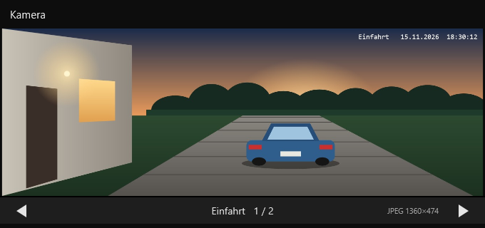

Shows network cameras in the Windows QuadClient: RTSP with H.264, MJPEG over HTTP or single images (JPEG).
Several cameras per quadrant, browse with ◀ ▶, click the image for full screen.

The plugin in the QuadClient (drawn sample image): ◀ ▶ to browse, the camera name and, on the right, stream type and resolution.
Adding a camera
On the “Quadrants” tab select the entry that uses this plugin.
In the sub-elements window click ⊕: a new camera entry appears. Each camera is one entry;
their order (arrows ∧ ∨) is the order when browsing.
Select the entry. The camera's fields appear below.
With ONVIF: enter camera address, ONVIF port, user and password, then set
“Query camera now (ONVIF)” to “Yes”. The plugin fills in the RTSP addresses and the snapshot address;
the outcome is shown in the result field.
By hand: enter the address directly in the RTSP address for the quadrant (and, if needed, the full-screen RTSP,
MJPEG and snapshot addresses). User and password belong in their own fields, not in the address.
Transfer the project and restart the QuadClient.
Sub-elements [Cameras]
⊕2 ⊗ ∧ ∨
Driveway 3
Garden
Camera
Name
Driveway
Camera address
192.168.1.20
ONVIF port
80
User
viewer
Password
••••••••
Query camera now (ONVIF)
Yes 4
Query result
Quadrant: H264 640×360 – full screen: H264 1920×1080
Image source
Automatic
RTSP address quadrant
rtsp://192.168.1.20:554/Streaming/Channels/102 5
RTSP address full screen
rtsp://192.168.1.20:554/Streaming/Channels/101
CO show camera (DPT 1.x)
Door bell
What it looks like in the Experte (redrawn, with sample values). The numbers refer to the steps above.
Fields
Field
Meaning
Name
Camera name shown in the bar below the image.
Camera address, ONVIF port
IP address or name and port of the ONVIF service (usually 80). Only used for the query in the Experte.
User, password
Login for ONVIF, RTSP and HTTP.
Query camera now (ONVIF)
“Yes” starts the query; the field then returns to “No”.
Image source
Automatic = RTSP if entered, otherwise MJPEG, otherwise single images. Or one of the three.
RTSP address quadrant
Small stream (H.264, about 640 × 360) for the quadrant.
RTSP address full screen
Large stream for full screen. Empty = same as quadrant.
MJPEG address
http://… or https://… of an MJPEG stream.
Snapshot address
http://… or https://… of a JPEG image.
Snapshot interval [ms]
100 … 60000, single images only.
CO show camera (DPT 1.x)
Drag a communication object from the project onto the field. A value other than 0 (door bell, motion detector) switches to this camera.
Common RTSP addresses
Vendor
Large stream
Small stream
Axis
rtsp://IP/axis-media/media.amp
rtsp://IP/axis-media/media.amp?resolution=640x360
Hikvision
rtsp://IP:554/Streaming/Channels/101
rtsp://IP:554/Streaming/Channels/102
Dahua
rtsp://IP:554/cam/realmonitor?channel=1&subtype=0
rtsp://IP:554/cam/realmonitor?channel=1&subtype=1
Addresses may differ by model and firmware; the ONVIF query returns the correct ones.
The stream must be set to H.264 in the camera (H.265 is untested and needs the Windows “HEVC Video Extensions”).
Axis cameras with current AXIS OS
Tested with an AXIS P1468-LE (4K). Three things differ from what you might expect; all of them are in the camera's web
interface under System → ONVIF.
Create an ONVIF account. On Axis, ONVIF has its own accounts; the camera's normal login does not apply.
Under “ONVIF accounts” click “Add account”, set name and password and enter both in the Experte as user and
password. The same account is used for the RTSP stream.
Create a small media profile. By default there is only one full-resolution profile per codec
(e.g. “profile_1 h264” with 3840 × 2160). Under “ONVIF media profiles” click “Add media profile” and create a
profile with H.264 and about 1280 × 720. For full screen another one with 1920 × 1080 is usually enough.
Query in the Experte. Set “Query camera now (ONVIF)” to “Yes”. The plugin takes the smallest H.264 profile
from 640 pixels width for the quadrant and the largest for full screen. Repeat the query after every change to the
profiles in the camera.
HTTPS only: Current Axis cameras often allow HTTPS only, port 80 is then closed. The ONVIF port can
still stay at 80 – if the camera does not answer there, the plugin queries over HTTPS by itself. The snapshot address is
then entered with https:// as well.
It also works without a small profile: the quadrant then receives the full stream and scales it down. On a powerful PC
that is smooth, but it costs CPU and network load for nothing – on a wall panel, create the small profile.
Notes
User and password are stored readable in the project and on the HomeServer. Create a separate view-only user
in the camera. On Hikvision and Dahua, ONVIF must be enabled and an ONVIF user created.
The plugin runs in the Windows QuadClient only. Gira's apps for iOS, Android and G1 do not load third-party plugins.
If there is no image, the reason is shown over the image and in the QuadClient's error.log (lines with “Kamera 99-2”).
The plugin reconnects by itself after errors.
Not included: pan/tilt/zoom, quad view, audio, RTP over UDP, rtsps://.